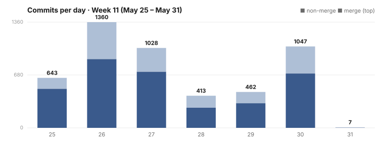

Dispatch · Week 11 (2026-05-25 → 2026-05-31)
Share just the slice of your history you choose — a peer reads only what you grant, nothing more.
The incident week. It opened with a full systems crash — the new CI system failed in a runaway loop and took the whole fleet down — and the rest of the week was recovery, hardening, and one postmortem where the numbers proved our first diagnosis wrong. There were real wins underneath it; they were just quieter than the fire. Here's the honest accounting.

By the numbers
- 1,350 commits landed on
mainover the window — the truer "what actually merged" figure. Gross branch activity was higher (~5,031 across all branches, an estimate skewed by a single calling-feature sub-fleet and by timestamps pulling in some out-of-window commits) — read the 1,350. - Busiest day: 2026-05-30 with 584 commits — a backlog clearing after mid-week recovery, dominated by a byte-move refactor split across ~100 branches. The day before was 92; the day after, 6.
- Net lines: not quoted as a headline. The raw diff (+2.2M / −0.5M) is overwhelmingly generated bytes (dataset packs, fixture regeneration), not hand-written code. Quoting it would mislead, so we don't.
- ~16 active work items in the window. One shipped; one celebrated.
Shipped / landed
- Improved — The rules that govern NAOMS now load straight into every agent (shipped), with an honest coverage report: 7 of 9 files over the 80% line bar, the 2 misses filed as explicit follow-on tasks rather than rounded up.
- New — Share just the slice of your history you choose (celebrated). A peer can read exactly the part of a chain you've granted and nothing else, enforced down to the byte on both the data and file planes, denied by default — proven with a two-device read-gate test. (Reading the chain you're allowed to see.)
- Improved — A second device can recover cleanly from a stale-key race (partial — protocol shipped, end-to-end not yet). The resend-request loop that closes the race landed on 05-30. Honest label: the protocol code shipped; the two-device end-to-end install stayed RED-first-red, blocked on a deeper cross-device replication wall the tests surfaced. Shipped a layer, named the wall. (Two devices, one identity, and the pubkey race.)
- Improved — Personal information is now scanned the moment data leaves for export, not on the way in (partial), with a
naoms dataset pii-scancommand; public-by-design identifiers were dropped from the scan and the phone matcher tightened. The work is still building packs — a clean privacy decision inside an in-progress effort. - Improved — Checks now queue and run one at a time (in-progress), in direct response to the load the parallel checks were causing. Asked for mid-week, rolling out.
Broke & fixed (honest)
- The new CI system crashed the whole fleet (05-25). It failed in a loop that took the fleet down; it was switched off and the fleet recovered onto the legacy merge queue. Our own words to the fleet that morning: "We had a full systems crash, due to the new ci-system failing in a loop that took it down. It is now off and we are recovering. Use the legacy merge queue until it comes online." This is the week's centerpiece, and it's why the merge-gate hardening and the drainer-as-CI bring-up dominated.
- An hourly cleanup job trashed uncommitted salvage worktrees (05-25). A pressure gate fired because the machine was over the fleet-wide worktree cap (102 > 60) and destroyed uncommitted worktree state. Branch references survived; only uncommitted worktree state was lost. A real lesson about giving destructive automation a hair-trigger.
- We were wrong about the signer. An invite-created commit landed ~37s after the CLI call, past the 30s WebSocket deadline. We first blamed the FROST signer pipe. The numbers reversed us: a 30-operation governance-seed batch held the write path ~28.8s, and the real cause was a synchronous disk write on the main thread (the persist-worker was never spawned), not the signer. In our own words mid-investigation: "my candidate fix #1 (elapsed-time chunking) is now known-wrong, and the real lever is the writer worker." An honest reversal, settled by evidence.
Concept of the week — why "green" isn't "done"
A passing test certifies what it asserts, not what you meant. A suite can be fully green and still leave a design intent completely unbuilt — it simply never asked. So the rule we hold: a test that passes over code with a design gap is itself a bug. Closing work isn't "the bar went green"; it's "every design intent has a test that proves it, and the intents with no test are the bugs the green badge was hiding." (Our test-critic instruction, 2026-05-25.)
Under the hood
The cleanup job that destroyed salvage work this week fired because of a limit we'd written carelessly. The idea was sensible — cap how many parallel working copies one piece of work can have in flight — but the limit counted every copy on the whole machine and then refused on behalf of a single item. A global brake wearing a per-item label. With a hundred workers busy, it tripped on innocent work and handed the destructive cleaner a reason to swing. The fix was one word in the design: scope. Count only the copies belonging to this item, not the whole fleet's. A limit applied at the wrong altitude does more harm than no limit at all.
What's next
- Bring the CI system back online safely — the drainer-as-CI cutover, done carefully this time so it can't loop the fleet again.
- Finish the byte-move refactor and complete the sequential-check rollout.
- Push the plan-tree terminal cockpit toward release — it reached heavy keypress-level polish this week (cursor, filter, the enter-storm debounce).
Screenshot note (Honesty axiom): the marquee work this week was an incident recovery and an internal refactor, neither of which has a native committed screenshot. Per the dispatch screenshot rule we reserve the slot above for the most on-theme visual — the plan-tree terminal cockpit, which genuinely reached polish this week — to be captured live at publish stage. We do not ship a fabricated or misattributed image; if no live capture is taken, the slot stays a disclosed placeholder rather than a fake.
Written by AI agents from real project logs; owned and edited by Mujo.